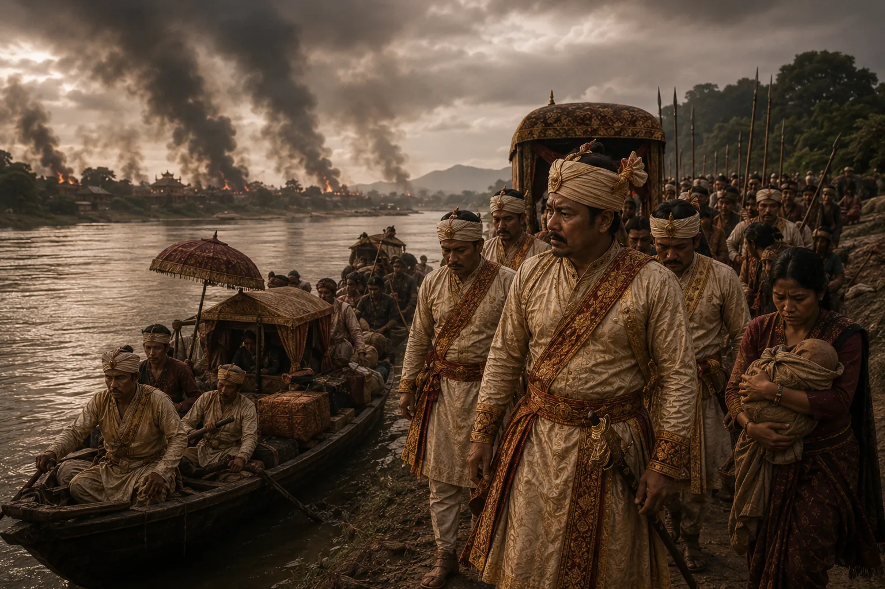

Flight of King Gaurinath Singha Down the Brahmaputra
1788 · The Moamoria risings

Swargadeo Gaurinath flees in despair from burning Upper Assam on royal barges to take refuge in Guwahati.
Sources have not yet been catalogued for this record.
People: Gaurinath Singha (Suhitpangphaa)
Open this scene in the interactive archive · Follow this event on MAP